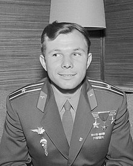
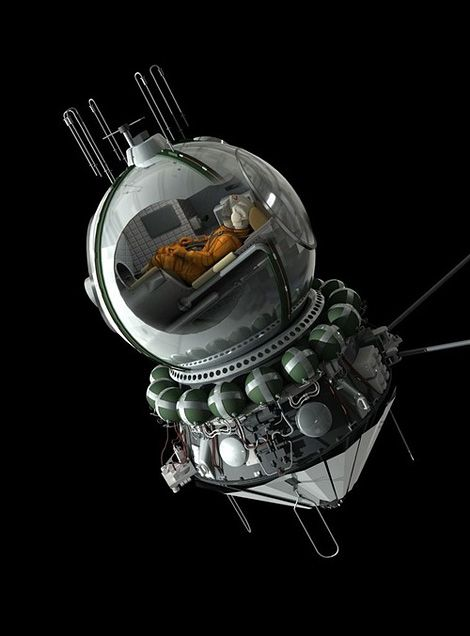

12 апреля 1961 года - Юрий Гагарин стал первым человеком, совершившим полет в космос, достигнув главной цели в Космической гонке. Его ракета-носитель «Восток-1» была запущена с космодрома Байконур и после 108 минут успешно приземлилась в Саратовской области. Гагарин стал международной знаменитостью и был награжден многими медалями и званиями, включая Героя Советского Союза, высшую награду СССР.

